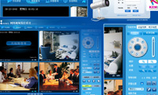
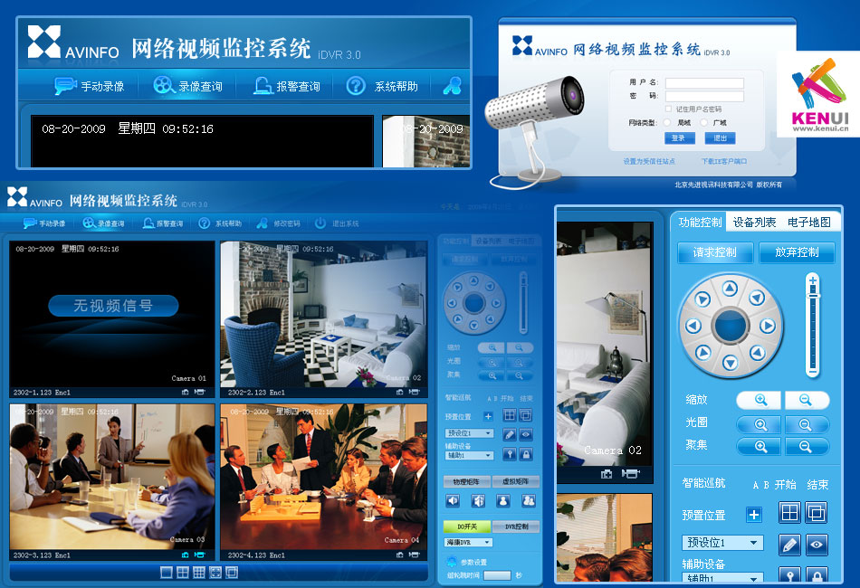

视频监控系统界面
2009年09月
北京先进视讯科技有限公司，网络视频解决方案的领导者，公司致力于网络视频产品的研发、生产、销售与服务。为平安城市、政府机构、公安、司法、部队、学校、石油石化、企事业单位、公共娱乐场所等提供最适合、最稳定、最完善的网络视频解决方案。我们为其提供了他们的视频监控设备对应的软件界面。

北京先进视讯科技有限公司，网络视频解决方案的领导者，公司致力于网络视频产品的研发、生产、销售与服务。为平安城市、政府机构、公安、司法、部队、学校、石油石化、企事业单位、公共娱乐场所等提供最适合、最稳定、最完善的网络视频解决方案。我们为其提供了他们的视频监控设备对应的软件界面。